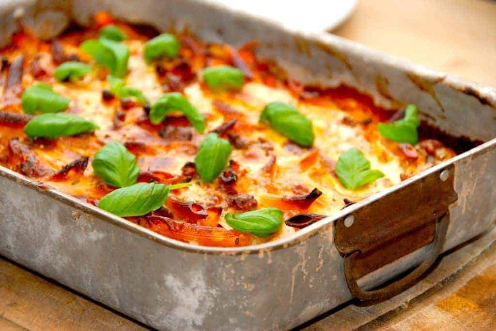

Recepie for a juicy and delicious lasagnette with bechamelsauce.
Lasagnette is always a hit among adults and children.
This recipe is designed for food lovers in a hurry!
- Total cook time: 60 min
- Active time: 30 min
- Servings: 4-6
Ingredients:
- 1 red onion, minced
- 500 g ground beef
- 2-3 carrots, grated
- 2 cans of chopped tomatoes
- 3 cloves of garlic, pressed
- 100 g tomato pasta
- 2 dl milk
- 1 beef boullion cube in 2 dl water
- 2 tsp oregano
- 400 g pasta screws
- 150g cheese of your preference
bechamelsauce:
- 1,5 tbsp butter
- 1,5 tbsp flour
- 3 dl milk
- 1 tsp nutmeg
Directions:
- Saute ground beef in a big pan.
- Add red onion and garlic and let it cook together for a minute or two.
- Add carrots, chopped tomatoes, tomato pasta, milk and 2 dl beef boullion.
- Stir and cook for 5 minutes.
- Make bechamelsauce by melting butter in a pot. Add flour and slowly bit by bit add milk.
- Let bechamelsauce cook for a few minutes and taste it by adding nutmeg, salt and pepper. For extra taste add grated cheese.
- Distribute pasta screws in an ovenproof dish and pour meat sauce over it.
- Lastly pour bechamelsauce over it and sprinkle with cheese.
Bake it for 35 minutes at 200 °C. BON APPETITE!
Back to homepage